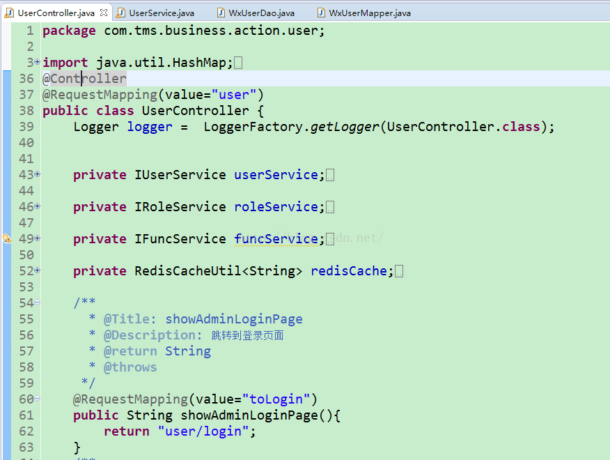
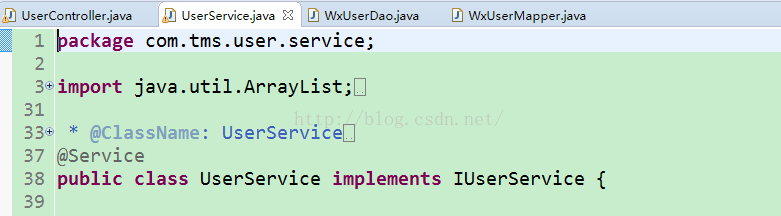
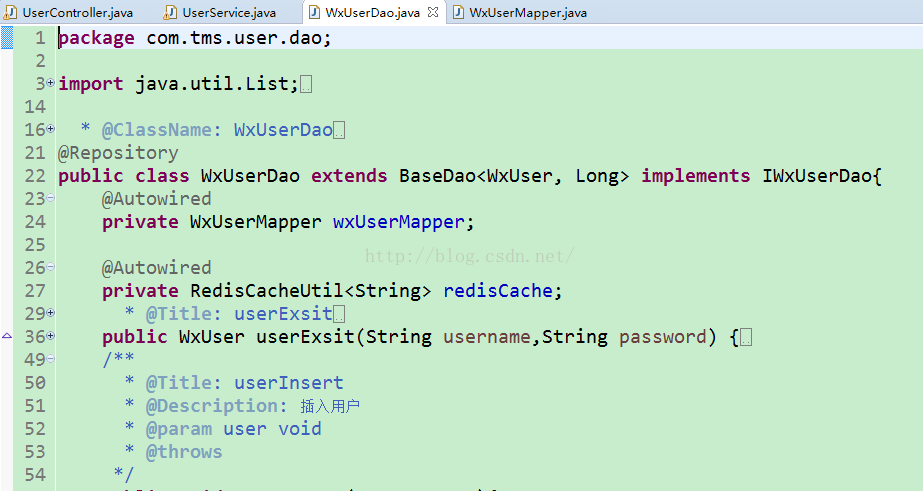
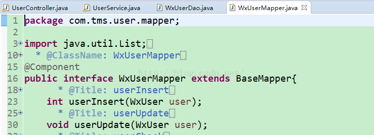

SpringMVC常用注解@Controller,@Service,@repository,@Component
SpringMVC常用注解@Controller,@Service,@repository,@Component
controller层使用@controller注解

@Controller 用于标记在一个类上，使用它标记的类就是一个SpringMVC Controller 对象。分发处理器将会扫描使用了该注解的类的方法。通俗来说，被Controller标记的类就是一个控制器，这个类中的方法，就是相应的动作。
@RequestMapping是一个用来处理请求地址映射的注解，可用于类或方法上。用于类上，表示类中的所有响应请求的方法都是以该地址作为父路径。比如图一中，跳转到登录页面的路径就是localhost:8080/xxx-war/user/toLogin
service采用@service注解

例：@Service("userService")注解是告诉spring，当Spring要创建UserServiceImpl的的实例时，bean的名字必须叫做"userService"，这样当Action需要使用UserServiceImpl的的实例时,就可以由Spring创建好的"userService"，然后注入给Action。
dao层使用@repository注解

@Repository(value="userDao")注解是告诉Spring，让Spring创建一个名字叫“userDao”的UserDaoImpl实例。
当Service需要使用Spring创建的名字叫“userDao”的UserDaoImpl实例时，就可以使用@Resource(name = "userDao")注解告诉Spring，Spring把创建好的userDao注入给Service即可。
@Autowired可以对成员变量、方法和构造函数进行标注，来完成自动装配的工作，我们也要清楚，@Autowired是根据类型进行自动装配的。
mapper层使用@Component注解

总结一下：
@Controller 用于标记在一个类上，使用它标记的类就是一个SpringMVC Controller 对象。分发处理器将会扫描使用了该注解的类的方法。通俗来说，被Controller标记的类就是一个控制器，这个类中的方法，就是相应的动作。
1、@controller 控制器（注入服务）
2、@service 服务（注入dao）
3、@repository dao（实现dao访问）
4、@component （把普通pojo实例化到spring容器中，相当于配置文件中的<bean id="" class=""/>）